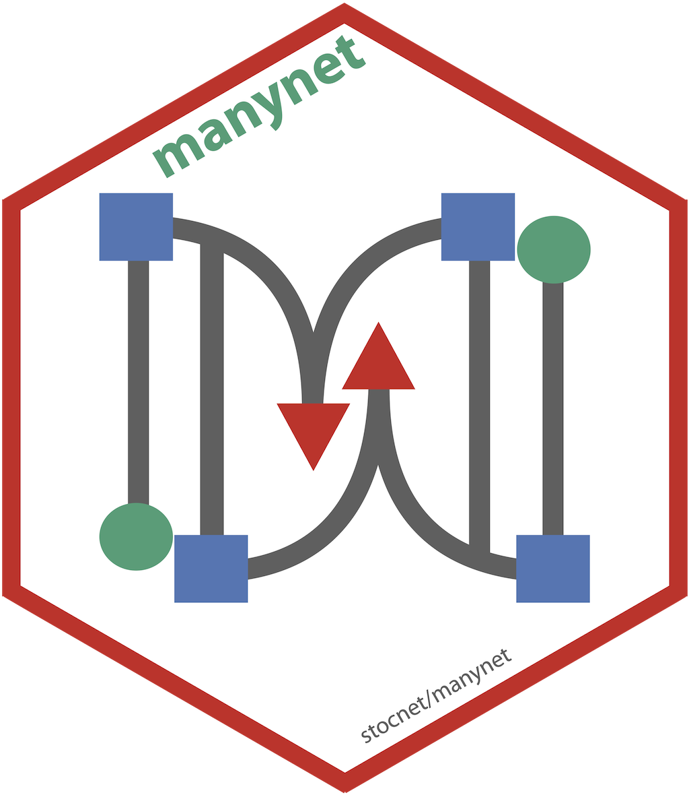
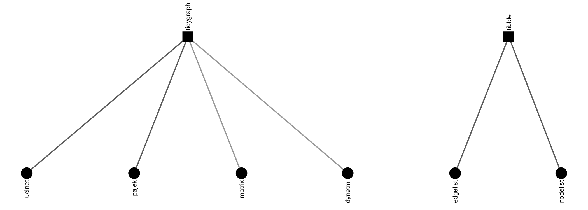
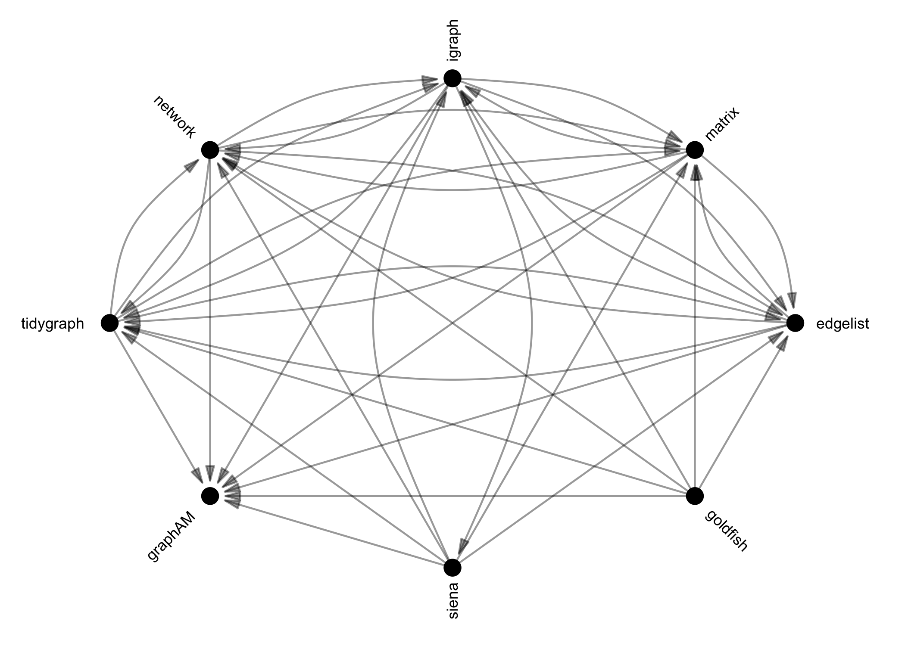
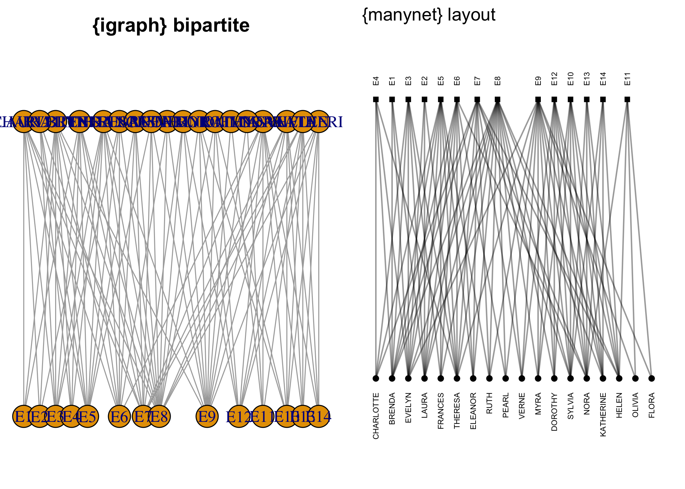

Learning and using network analysis tools in R can be challenging. There are many great packages, all with their own offerings and advantages, but also all with their own vocabulary, syntax, and expected formats for data inputs and analytic outputs. Moreover, many of these packages only work on some types of networks (usually one-mode, simple, directed or undirected networks); if you have a different type of network, a different package is needed. Lastly, even packages with excellent graphical capabilities can make visualising networks slow and cumbersome by using poor defaults and many, incomprehensible options to change them.
That’s why manynet aims to help researchers with Making, Manipulating, and Mapping networks.
For Measures, Memberships, or Models, see {migraph}.
First, manynet provides a set of tools that can be used to make networks in any number of common formats. Networks can come from many sources, some can be imported from outside R, some can be found in this or other packages and coerced into some common format, and many types of networks can be created or generated using functions in this package.
manynet includes algorithms for making networks with particular properties. The create_* group of functions create networks with a particular structure, and will always create the same format from the same inputs, e.g.:
create_components(), create_core(), create_empty(), create_explicit(), create_filled(), create_lattice(), create_ring(), create_star(), create_tree()
The generate_* group of functions generate networks from generative mechanisms that may include some random aspect, and so will return a different output each time they are run, e.g.:
generate_permutation(), generate_random(), generate_scalefree(), generate_smallworld(), generate_utilities()
Note that all these functions can create directed or undirected, one-mode or two-mode networks. Creating two-mode networks is as easy as passing the first argument (n) a vector of two integers instead of one. For example, n = 10 will create a one-mode network of 10 nodes, whereas n = c(10,5) will create a two-mode network of 10 nodes in the first mode, and 5 nodes in the second mode. Some of these functions wrap existing algorithms in other packages, while others are unique offerings or add additional formats, e.g. two-mode networks.
manynet offers a number of options for importing network data found in other repositories. Besides importing and exporting to Excel edgelists and nodelists, there are specific routines included for UCINET, Pajek, and DynetML files, e.g.:

There is also a lot of network data in addition to analytic functions that already reside in various packages in R. Once network data is in R, manynet’s as_*() functions can be used to translate objects from one of the above classes into any other, and include:

These functions are designed to be as intuitive and lossless as possible, outperforming many other class-coercion packages.
We use these functions internally in every manynet function to (1) allow them to be run on any compatible network format and (2) use the most efficient algorithm available. This makes manynet compatible with your existing workflow, whether you use base R matrices or edgelists as data frames, {igraph}, {network}, or {tidygraph}, and extensible by developments in those other packages too.
manynet’s to_*() functions can be used on any class object to reformat, transform, or split networks into networks with other properties, e.g.:
to_acyclic(), to_anti(), to_blocks(), to_components(), to_directed(), to_egos(), to_eulerian(), to_galois(), to_giant(), to_matching(), to_mode1(), to_mode2(), to_multilevel(), to_named(), to_no_isolates(), to_onemode(), to_reciprocated(), to_redirected(), to_simplex(), to_slices(), to_subgraph(), to_subgraphs(), to_ties(), to_twomode(), to_undirected(), to_uniplex(), to_unnamed(), to_unsigned(), to_unweighted(), to_waves()
Reformatting means changing the format of the network, e.g. from directed to undirected via to_undirected().
Transforming means changing the dimensions of the network, e.g. from a two-mode network to a one-mode projection via to_mode1().
Splitting means separating a network, e.g. from a whole network to the various ego networks via to_egos().
manynet offers a range of measures and models with sensible defaults. Many wrap existing functions in common packages for use with one-mode networks, but extend these to treat and/or normalise for two-mode (and sometimes three-mode) networks correctly. Functions are given intuitive and succinct names that avoid conflicts with existing function names wherever possible.
manynet’s *is_*() functions offer fast logical tests of various network properties. These can be used to create new
manynet includes three one-line graphing functions with sensible defaults based on the network’s properties. autographr() is used to graph networks in any of the manynet formats. It includes sensible defaults so that researchers can view their network’s structure or distribution with a minimum of fuss. manynet uses the excellent ggraph package (and thus ggplot2) as a plotting engine. This also makes extending and theming default output easy, and patchwork is used to help arrange individual plots together.
There are two other graphing functions too. autographs() is used to graph multiple networks together, which can be useful for ego networks or network panels. autographd() is used to graph dynamic networks.
In addition, manynet offers some additional layout algorithms for snapping layouts to a grid or visualising partitions horizontally, vertically, or concentrically. The following figures illustrate the difference in results over igraph:

The easiest way to install the latest stable version of manynet is via CRAN. Simply open the R console and enter:1
install.packages('manynet')
You can then begin to use manynet by loading the package:
This will load any required packages and make the data and tutorials (see below) contained within the package available.
For the latest development version, for slightly earlier access to new features or for testing, you may wish to download and install the binaries from Github or install from source locally.
The latest binary releases for all major OSes – Windows, Mac, and Linux – can be found here. Download the appropriate binary for your operating system, and install using an adapted version of the following commands:
install.packages("~/Downloads/manynet_winOS.zip", repos = NULL)
install.packages("~/Downloads/manynet_macOS.tgz", repos = NULL)
install.packages("~/Downloads/manynet_linuxOS.tar.gz", repos = NULL)
To install from source the latest main version of manynet from Github, please install the remotes or devtools package from CRAN and then:
remotes::install_github("snlab-ch/manynet", build_vignettes = TRUE)
remotes::install_github("snlab-ch/manynet@develop", build_vignettes = TRUE)
This package includes a couple of tutorials to help new and experienced users learn how they can conduct social network analysis using the package. To access the tutorials, you will need to have the additional package learnr installed: install.packages("learnr"). For more details on the learnr package, see here. Then we suggest that you check to see which vignettes are currently available:
learnr::available_tutorials("manynet")
#> Available tutorials:
#> * manynet
#> - tutorial1 : "Data"
#> - tutorial2 : "Visualisation"You can then choose to begin a tutorial using the following command: e.g. learnr::run_tutorial("tutorial1", "manynet").
This package stands on the shoulders of several incredible packages.
In terms of the objects it works with, this package aims to provide an updated, more comprehensive replacement for intergraph. As such it works with objects in igraph and network formats, but also equally well with base matrices and edgelists (data frames), and formats from several other packages.
The user interface is inspired in some ways by Thomas Lin Pedersen’s excellent tidygraph package, though makes some different decisions, and uses the quickest igraph or network routines where available.
manynet has inherited most of its core functionality from its maternal package, migraph. migraph continues to offer more analytic and modelling functions that builds upon the architecture provided by manynet. For more, please check out migraph directly.
Development on this package has been funded by the Swiss National Science Foundation (SNSF) Grant Number 188976: “Power and Networks and the Rate of Change in Institutional Complexes” (PANARCHIC).
Macs with Macports installed may also install from the command line using Macports.↩︎